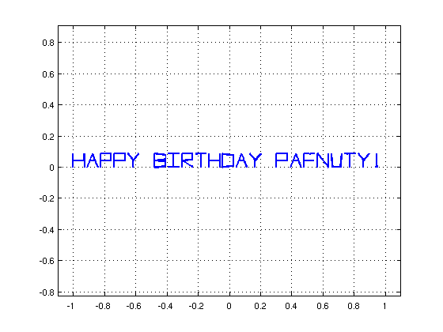
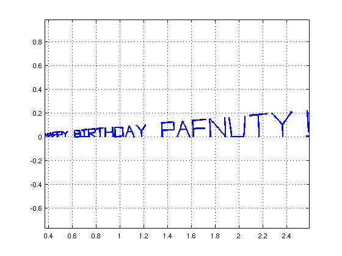
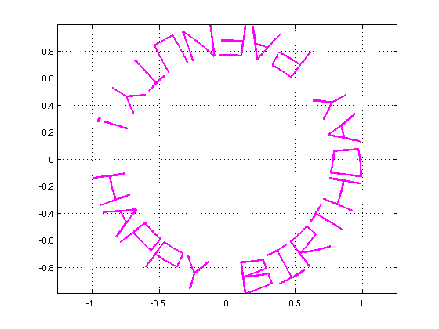
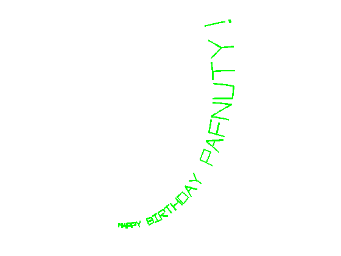
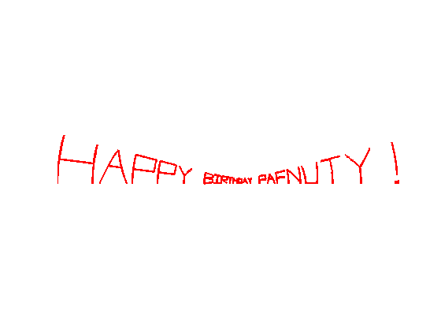

Birthday cards and analytic functions
Nick Trefethen, September 2010
(Chebfun example fun/Birthday.m)
Chebfun's SCRIBBLE command was introduced for entertainment, but it turns out to be surprisingly useful also illustrating complex variables. Suppose for example it is Chebyshev's birthday and you want to send him a card:
s = scribble('Happy Birthday Pafnuty!'); LW = 'linewidth'; lw = 1.8; plot(s,'-',LW,lw) xlim([-1.1 1.1]), axis equal, grid on
This chebfun s is a a piecewise linear complex funtion of a real variable, as we can see by writing it without the semicolon:
s
s =
chebfun column (89 smooth pieces)
interval length endpoint values
[ -1, -0.98] 2 complex values
[ -0.98, -0.96] 2 complex values
[ -0.96, -0.93] 2 complex values
[ -0.93, -0.91] 2 complex values
[ -0.91, -0.89] 2 complex values
[ -0.89, -0.87] 2 complex values
[ -0.87, -0.84] 2 complex values
[ -0.84, -0.82] 2 complex values
[ -0.82, -0.8] 2 complex values
[ -0.8, -0.78] 2 complex values
[ -0.78, -0.75] 2 complex values
[ -0.75, -0.73] 2 complex values
[ -0.73, -0.71] 2 complex values
[ -0.71, -0.69] 2 complex values
[ -0.69, -0.66] 2 complex values
[ -0.66, -0.64] 2 complex values
[ -0.64, -0.62] 2 complex values
[ -0.62, -0.6] 2 complex values
[ -0.6, -0.57] 2 complex values
[ -0.57, -0.55] 2 complex values
[ -0.55, -0.53] 2 complex values
[ -0.53, -0.51] 2 complex values
[ -0.51, -0.48] 2 complex values
[ -0.48, -0.46] 2 complex values
[ -0.46, -0.44] 2 complex values
[ -0.44, -0.42] 2 complex values
[ -0.42, -0.39] 2 complex values
[ -0.39, -0.37] 2 complex values
[ -0.37, -0.35] 2 -0.39 -0.32
[ -0.35, -0.33] 2 -0.32 -0.36
[ -0.33, -0.3] 2 complex values
[ -0.3, -0.28] 2 complex values
[ -0.28, -0.26] 2 complex values
[ -0.26, -0.24] 2 complex values
[ -0.24, -0.21] 2 complex values
[ -0.21, -0.19] 2 complex values
[ -0.19, -0.17] 2 complex values
[ -0.17, -0.15] 2 complex values
[ -0.15, -0.12] 2 complex values
[ -0.12, -0.1] 2 complex values
[ -0.1, -0.079] 2 complex values
[ -0.079, -0.056] 2 complex values
[ -0.056, -0.034] 2 complex values
[ -0.034, -0.011] 2 complex values
[ -0.011, 0.011] 2 complex values
[ 0.011, 0.034] 2 complex values
[ 0.034, 0.056] 2 complex values
[ 0.056, 0.079] 2 complex values
[ 0.079, 0.1] 2 complex values
[ 0.1, 0.12] 2 complex values
[ 0.12, 0.15] 2 complex values
[ 0.15, 0.17] 2 complex values
[ 0.17, 0.19] 2 complex values
[ 0.19, 0.21] 2 complex values
[ 0.21, 0.24] 2 complex values
[ 0.24, 0.26] 2 complex values
[ 0.26, 0.28] 2 complex values
[ 0.28, 0.3] 2 complex values
[ 0.3, 0.33] 2 complex values
[ 0.33, 0.35] 2 complex values
[ 0.35, 0.37] 2 complex values
[ 0.37, 0.39] 2 complex values
[ 0.39, 0.42] 2 complex values
[ 0.42, 0.44] 2 complex values
[ 0.44, 0.46] 2 complex values
[ 0.46, 0.48] 2 complex values
[ 0.48, 0.51] 2 complex values
[ 0.51, 0.53] 2 complex values
[ 0.53, 0.55] 2 complex values
[ 0.55, 0.57] 2 complex values
[ 0.57, 0.6] 2 complex values
[ 0.6, 0.62] 2 complex values
[ 0.62, 0.64] 2 complex values
[ 0.64, 0.66] 2 complex values
[ 0.66, 0.69] 2 complex values
[ 0.69, 0.71] 2 0.66 0.71
[ 0.71, 0.73] 2 complex values
[ 0.73, 0.75] 2 complex values
[ 0.75, 0.78] 2 complex values
[ 0.78, 0.8] 2 complex values
[ 0.8, 0.82] 2 complex values
[ 0.82, 0.84] 2 complex values
[ 0.84, 0.87] 2 complex values
[ 0.87, 0.89] 2 complex values
[ 0.89, 0.91] 2 complex values
[ 0.91, 0.93] 2 0.94 0.95
[ 0.93, 0.96] 2 complex values
[ 0.96, 0.98] 2 complex values
[ 0.98, 1] 2 complex values
Total length = 178 vertical scale = 1
Since s is a chebfun, we can apply functions to it. For example, here is exp(s):
plot(exp(s),'b',LW,lw), axis equal, grid on
Here is exp(3i*s):
plot(exp(3i*s),'m',LW,lw), axis equal, grid on
Playing around with different functions is a good way to learn about complex variables, and a good way to make greeting cards. Here are a couple more with axes turned off for greater beauty.
plot(exp((1+1i)*s),'g',LW,lw), axis equal, axis off snapnow plot(sinh(3*s),'r',LW,lw), axis equal, axis off 